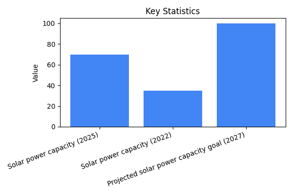

India's solar power capacity has doubled from 35GW in 2022 to 70GW in 2025, driven by falling costs and government support. This growth is expected to continue, with a target of 100GW by 2027, thanks to abundant sunlight, rural adoption, and solar parks. While challenges in grid integration and storage persist, India is positioned to be a major player in the global solar market.